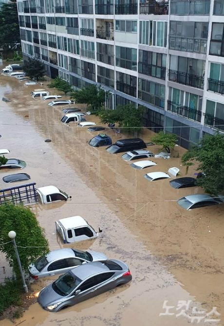

30일 새벽 대전과 세종 지역에 집중호우가 내리면서 피해 속출이 우려되고 있다. 사진은 서구 정림동 아파트 단지 모습. (사진=독자 제공)
0일 대전 세종 지역에 쏟아진 폭우로 피해가 속출하고 있다.
대전과 세종 전역과 충남 계룡, 논산에 호우 경보가 서천과 부여, 금산, 공주에 호우 주의보가 내려진 가운데 일부 지역에 폭우가 쏟아지면서 대전 서구 정림동 아파트 단지가 물에 잠기는 등 피해가 속출했다.
오전 7시 20분 현재 대전 문화동의 누적 강수량이 150mm를 기록한 가운데 천안 성거 118, 충남 계룡 98.5, 세종 전의 95.5, 아산 송악 90.5, 논산 88.5mm의 누적 강수량을 기록하고 있다.
이 시각 현재도 곳에 따라 시간당 30에서 50mm 안팎의 강한 비가 내리고 있다.
특히 문화동의 경우 이 날 새벽 4시부터 한 시간 동안 80mm의 폭우가 쏟아졌고, 천안과 세종에도 시간당 50mm 가량의 집중 호우가 이어졌다.
피해도 잇따랐는데, 새벽 1시 15분쯤 천안 서북구 상가 주택이 침수되는가 하면 아산에서는 차량이 침수되는 등 피해 접수가 이어지고 있다.
특히 대전 서구 정림동 아파트 단지가 물에 잠기면서 피해가 계속될 전망이다.
홍수 경보까지 발효된 대전은 하천의 수위가 빠르게 불어나면서 모든 하상도로가 전면 통제됐고 월평과 갑천, 대전역 등 3개 지하차도의 진입도 통제되고 있다.
대전 소방 관계자는 "지하 주차장은 물론 워낙 광범위한 곳에서의 침수 신고가 접수되고 있다"며 "특히 일부 지역의 경우 배수가 잘 되지 않아 지대가 낮은 지상 침수 사례도 많다"고 밝혔다.
한편 기상청은 31일 오전까지 50에서 150mm, 많은 곳은 200mm 이상의 비가 더 내릴 것으로 내다봤다.